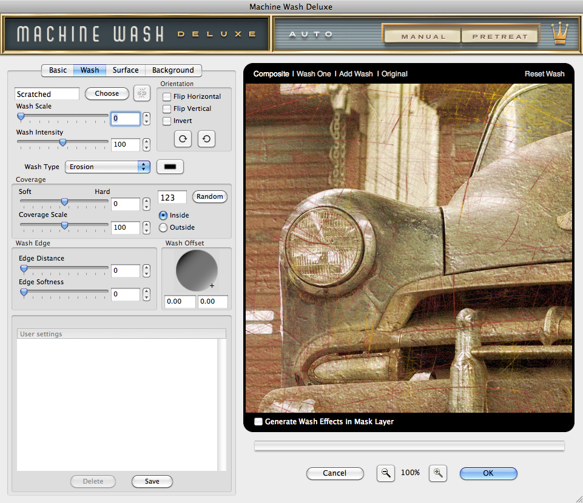

Let's Learn About Machine Wash Deluxe
Wash Settings
Use the Wash tabbed section to create and apply realistic aging, weathering and distress texture effects to your images quickly and easily! Choose from four different Wash Types to create amazingly cool stylistic effects on your image!
|  |
Select a Wash Texture
- Choose a Wash Texture Effect - To get started, you'll need to choose the texture you'd like to start working with. To do so, simply click the Choose button to launch the Texture Picker. Once you've selected the desired texture you'd like to use, you can proceed to fine-tune using the controls defined below. Additionally, you can select a different texture effect at any time and your current settings will be applied to the new texture.
- Link Texture Effect Option - If you happen to choose a texture effect already in use in another tabbed section of the plug-in, you will be asked by the plug-in if you'd like to link these texture settings. If you wish to link the settings, simply choose which tabbed section settings you'd like to inherit and click Yes to link and apply these settings. If you do not wish to link the settings, simply click the No button.
You may unlink and relink any linked or previously linked textures at any time by clicking the link button to the right of the Choose button. Note you cannot link any multiplier texture effects in the plug-in.
* NOTE - All Wash controls remain disabled until a texture is chosen from the Texture Picker. Additionally, if you're working with multiple Wash effects, you must select either Wash One or Wash Two to edit as all Wash controls will be disabled in the Composite view option.
Adjust the Wash Properties
We've given you the ability to adjust exactly how the Wash is applied to your image for even more versatility.
- Wash Scale - Using the slider control, you may enlarge or reduce the scale of the selected texture effect appropriate to the resolution of the image by moving the arrow below or simply enter a number in the text entry field to the right. By default the texture effect is applied at the smallest scale to the image.
- Wash Intensity - You may intensify or fade the texture effect by moving the slider control or by simply entering a number in the text entry field to the right.
- Wash Type - Machine Wash Deluxe comes with four amazing Wash effect types for you to apply to your images:
- Erosion Wash - Erosion is selected by default and is used when you wish to subtract a texture from your image to reveal the Background or layer beneath.
- Stain Wash - Select Stain when you want to apply the texture effect as a stain multiplied on top of your image. When this option is selected, use the color picker to the right to choose your stain color for the texture.
- Bleach Wash - Lighten and brighten the texture effect on your image with the Bleach Wash type. When this option is selected, use the color picker to the right to choose your desired bleach color.
- Color Wash - Colorize the Wash texture effect applied to your image by selecting Color Wash. When this option is selected, use the color picker to the right to choose your new texture color.

|
Adjust the Wash Orientation
- Flip Horizontal - Click the checkbox to flip the texture effect horizontally.
- Flip Vertical - Click the checkbox to flip the texture effect vertically.
- Invert Wash - Click the Invert checkbox to inverse the texture effect.
- Rotate - Click either rotate button to rotate the texture effect in 90 degree increments.
Adjust the Wash Coverage
- Coverage - Using the slider control, you can modify the areas of your design that the texture effect is applied to. The Coverage slider by default is set to zero for full texture effect coverage with no gaps, as the coverage gap amount is increased in either direction, random gaps of the texture effect will be removed.
- Hard Coverage - Move the slider to the right to create gaps with a more abrupt edge between the Wash effect and the image.
- Soft Coverage - Move the slider to the left to create gaps with a softer edge between the Wash effect and the image.
- Coverage Scale - When the Coverage Scale slider has been adjusted to any amount above or below zero, the size of the visible patches in the applied texture effect will be decreased accordingly.
- Random Button - When the Coverage slider has been enabled, use the Random button to modify the position and shape of the patches created by the reduced coverage area. Either click on the Random button to generate a random number or manually type any number in the text field you wish to use.
- Edge Distance - As the Edge Distance slider control is increased, the texture effect will retract from the edge of the image or image selection depending on the Wash Area settings defined. By default, the Edge Distance control is set to zero meaning the texture effect is applied to the entire image.
- Edge Softness - Use the Edge Softness slider to soften or sharpen the transition from the edge of the texture effected area to the unaffected area of the image.
- Wash Offset - You can easily reposition the Wash effect on your image after it has been enlarged in the Wash Scale control. Simply click and drag the plus '+' sign in the shaded sphere to offset the Wash texture, type the desired X and Y coordinates in the boxes beneath or simply hold down the Command (Apple) key (or the Ctrl key on Windows) key and click and drag the Wash texture effect in the preview window to change its position.
Adjust the Wash Area
These controls only affect the image when the coverage of the texture effect has been modified using the Edge Distance and Edge Softness controls.
- Inside - Toggle the Inside radio button to apply the texture effect to the inside of the image. Use this feature in tandem with the Edge Distance control to enhance the effect of the Wash near the edges of your images. Inside is always selected by default.
- Outside - Toggle the Outside radio button to apply the texture effect from the edges to the outside of the image. Use this feature in tandem with the Edge Distance control to enhance the effect of the Wash near the edges of your images.
User Settings - The User Settings dialog allows you to save or apply previously saved Wash settings to the image you're working with. Once you've created a Wash effect setting you like, click the Save button, name the setting and click OK to save this setting. To recall and apply a setting, simply click on the setting name in the dialog box. To delete a setting, simply click its name in the dialog box and click the Delete button.
Working with the Preview Window
- Preview Options - Above the preview window at left, you'll notice some viewing options. By default the Composite option is selected to show you what all combined tabbed section effects look like applied to the image. At any time you can click the Original option to toggle between the unaffected image and a preview of the filtered image with all effects applied.
- Reset Wash - Reset Wash is located above the preview window on the right. When clicked, it will reset all Wash effect controls to their default state.
- Preview Options - Wash Multiplier - By default you are only working with a single Wash effect (Wash One), by clicking the Add Wash option, you can now define an additional Wash texture effect with its own settings (Wash Two). You can easily toggle between each Wash texture effect by clicking Wash One or Wash Two or click Composite to view the fully composited preview with both Wash effects applied in addition to all combined tabbed section effects. At any time you can delete either Wash effect by clicking the red close box icon to the right of the Wash name.
* NOTE - If you're working with multiple Wash effects, you must select either Wash One or Wash Two to edit as all Wash controls will be disabled in the Composite view option. - Magnifying the Preview - Below the preview window, you'll see the magnification controls. By clicking the appropriate icon (- or +), you can increase or decrease the magnification of the preview window. The current level of magnification is shown between the magnification icons.
Pro Tip - Adobe Photoshop users may use keyboard shortcuts to instantly change the zoom magnification. To fit the full image within the preview window, simply hold down the Command (Apple) key (or the Ctrl key on Windows) then press the number zero '0' on the keyboard. To view the image at 100% size, hold down the Command (Apple) key (or the Ctrl key on Windows) then press the number one '1' on the keyboard. - Moving the Preview - When you have increased magnification and wish to view the texture effect on the rest of the image not visible in the preview window, simply move your mouse into the preview window and click and drag your image around to reveal the texture effected image.
- Re-positioning the Wash Effect - To modify the position of the Wash effect on your image, hold down the Command (Apple) key (or the Ctrl key on Windows) then click and drag within the preview window to reposition the center of the effect.
- Generate Wash Effects in Mask Layer* - Simply enable this option if you want the plug-in to create and apply the Wash effect to the original image layer mask leaving it intact and allowing you to adjust the Wash effect in the mask layer as you desire.
* NOTE - This option is only displayed in Adobe Photoshop and other imaging applications that support layering.